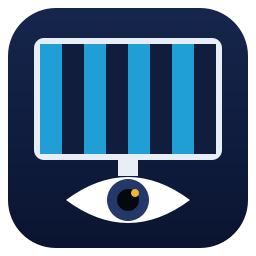

VisRig
Visual stimuli and pupil tracking for Neuropixels
Runs visual Neuropixels recordings from one window: the Baden battery, drifting gratings, the SC battery of sweeps, blinks and looms, receptive field mapping and spontaneous grey on the stimulus monitor, frame-locked like PsychoPy, with a TTL to the OneBox at every change and a photodiode patch for the true screen time. It tracks the pupil live (centre, size, eye movement and dilation), switches the IR LED, measures the camera delay, plans angled probe insertions on the Allen atlas and names every file the lab's way.
- Stimuli + TTL + photodiode
- Live pupil tracking
- Probe planner
Download
Screenshots
Documentation
The full instructions are in the README on GitHub, together with the source code, the manual (where there is one) and all earlier versions.